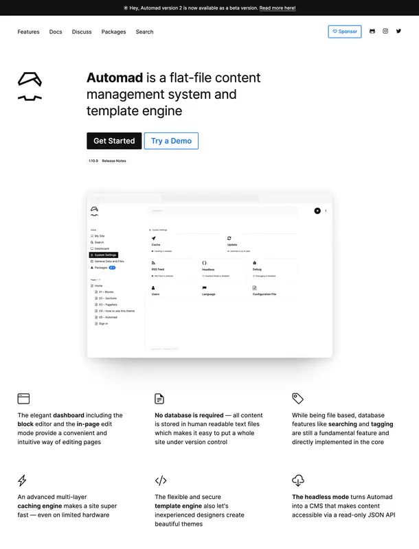
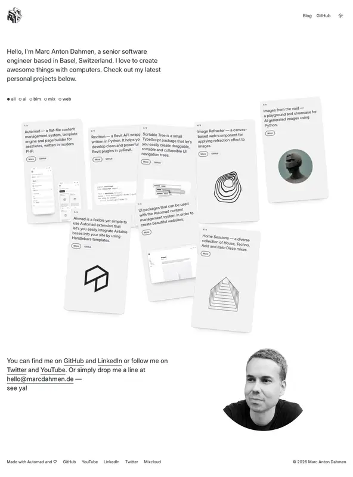
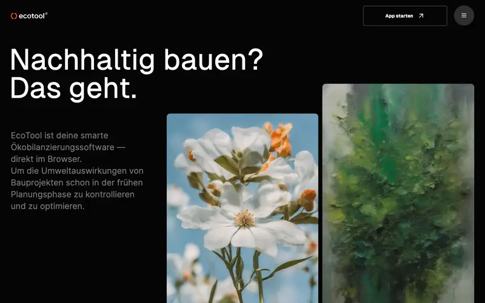

This is a small showcase of real websites built with Automad, a flat-file CMS made for people who want full control over their content without the overhead of a database. Take a look around and click through to see the sites in action.


